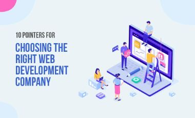

Choosing the Right Web Development company ensures your website is built with quality, creativity, and functionality tailored to your business goals. Partner with experts who deliver seamless, responsive, and scalable web solutions for lasting success.
Development
In today’s digital age, a robust online presence is crucial for businesses aiming to thrive in competitive markets. For Pakistani enterprises, selecting the right web development company is a pivotal decision that can significantly impact brand visibility, customer engagement, and overall growth. This guide provides actionable insights to help you make an informed choice.
How to Choose the Right Web Development Company in Pakistan

1. Identify Your Project Requirements
- Define your goals clearly: What type of website do you need? (e.g., e-commerce, portfolio, corporate)
- List required features and functionalities.
- Set your budget and timeline.
2. Check Company’s Portfolio and Experience
- Review previous projects to see their design and development style.
- Look for experience in your industry or with similar project types.
- Assess the quality and responsiveness of their websites.
3. Evaluate Technical Expertise
- Confirm the company’s proficiency in the technologies you need (e.g., PHP, WordPress, Laravel, React).
- Ask about their development process and tools.
- Check if they offer mobile-responsive, SEO-friendly, and secure web solutions.
4. Read Client Reviews and Testimonials
- Search for client feedback on their website and third-party platforms like Google, Clutch, or Facebook.
- Ask the company for client references you can contact.
5. Understand Their Communication and Support
- Ensure they communicate clearly and promptly.
- Confirm if they provide post-launch support and maintenance.
- Check their availability during your working hours.
6. Compare Pricing and Value
- Get detailed quotes from multiple companies.
- Avoid choosing based only on the lowest price; focus on overall value.
- Understand payment terms and project milestones.
7. Look for Local Presence and Cultural Fit
- A company based in Pakistan might better understand the local market and culture.
- Check if they have a physical office or local team for easier collaboration.
8. Assess Project Management and Delivery
- Ask about their project management approach (Agile, Scrum, Waterfall).
- Make sure they provide timelines, progress updates, and allow feedback during development.
9. Check for Additional Services
- Some companies offer digital marketing, branding, SEO, and hosting services.
- Consider these if you want an all-in-one solution.
1. Define Your Project Requirements
Before initiating your search:
- Identify Your Goals: Determine whether you need an e-commerce platform, a corporate website, or a portfolio site.
- List Desired Features: Consider functionalities like user registration, payment gateways, or content management systems.
- Set a Budget: Establish a realistic budget range to guide your discussions with potential developers.
Having a clear understanding of your needs ensures effective communication and alignment with the development team.
2. Evaluate Portfolios and Case Studies
Reviewing a company’s past projects offers insights into their capabilities and design aesthetics. Look for: Mr Morgan
- Diversity in Projects: Experience across various industries indicates versatility.
- Design Quality: Assess the visual appeal and user experience of their previous work.
- Functionality: Ensure their websites are responsive, fast-loading, and user-friendly.
A comprehensive portfolio reflects a company’s proficiency and reliability.
3. Check Client Testimonials and Reviews
Client feedback provides an external perspective on a company’s performance.
- Testimonials on Official Websites: These often highlight successful collaborations.
- Third-Party Review Platforms: Sites like DesignRush offer verified client reviews.
- Social Media Feedback: Comments and reviews on platforms like LinkedIn can be insightful.Wikipedia+2Reddit+2Wikipedia+2DesignRush
Consistent positive feedback indicates a company’s commitment to client satisfaction.
4. Assess Technical Expertise
Ensure the company possesses the technical skills required for your project:
- Proficiency in Relevant Technologies: Such as HTML5, CSS3, JavaScript frameworks, and backend languages.
- Experience with CMS Platforms: Like WordPress, Joomla, or custom solutions.
- Knowledge of SEO Best Practices: To enhance your website’s visibility.
A technically adept team ensures your website is built on solid foundations.
5. Evaluate Communication and Support
Effective communication is vital for project success:
- Responsiveness: Timely replies indicate professionalism.
- Clarity: The ability to explain technical concepts in understandable terms.
- Post-Launch Support: Availability for maintenance and updates after the website goes live
A company that values clear communication fosters a collaborative working relationship.
6. Consider Local Market Understanding
A company familiar with the Pakistani market can offer tailored solutions:
- Cultural Relevance: Designs and content that resonate with local audiences.
- Regulatory Compliance: Adherence to local laws and standards.
- Language Proficiency: Ability to create content in Urdu or other regional languages if needed.
7. Compare Pricing and Value
While cost is a factor, focus on value
- Transparent Pricing: Clear breakdowns of costs and deliverables.
- Quality Assurance: Investing in quality can yield better long-term returns.
- Scalability: Solutions that can grow with your business.
Balancing cost with quality ensures a worthwhile investment.
Questions To Ask When Choosing A Web Design Agency
You’ve narrowed down your list of top web design companies and are preparing to meet with them. But what questions should you bring to the table?
The questions you ask should help you evaluate the agency’s skills and ensure their services match your project goals, budget, and deadlines.
Here are the five key questions to ask before deciding to work with a web design agency.

1.Will You Provide Recommendations & Ideas?
Will the web design agency you’re considering offer you valuable recommendations and fresh ideas for your website?
It’s crucial to partner with an agency that takes initiative—one that brings forward strategies and suggestions aimed at growing your brand.
While reviewing a portfolio is important, keep in mind that many agencies can showcase their past work and solutions.
What sets the right agency apart is their ability to go further by offering tailored ideas that align with your business objectives.
At Digital Silk, our specialists perform thorough web design evaluations and provide insights by benchmarking your site’s performance against your competitors.
2. Who Will Be Working On My Project?
Some agencies may delegate your project to external vendors or freelancers.
While outsourcing isn’t necessarily a warning sign, having an in-house team tends to be more dependable since they’re readily available for updates and to address any questions you may have.
Make sure to clarify who your main point of contact will be to prevent any communication gaps. It’s also important to inquire about their qualifications and experience with web design projects.
Additionally, ask about the full team involved in your website’s development, especially those who can handle technical inquiries.
The team typically includes:
Any other specialists contributing to your project
Developers
Designers
Copywriters
Marketing experts
3. How Do You Ensure Transparent and Effective Communication?
Clear and consistent communication is essential to keep you informed about your website project’s progress.
It helps build trust between you and the agency throughout the development process.
A transparent web design company will keep you updated at every stage—whether they encounter technical challenges (like glitches in the navigation menu) or if any complexities arise that might delay the launch.
This approach ensures the project remains a collaborative effort focused on delivering a successful website that meets your goals.
4. Do You Have Experience With Similar Projects?
While your chosen agency doesn’t need to specialize exclusively in your industry, they should be able to demonstrate successful projects with clients who faced challenges similar to yours.
For instance, if your website requires features like an intelligent search function or dynamic pricing based on the buyer, ask whether they have handled comparable requirements before and what the results were.
Reviewing a web design company’s portfolio is a good way to gauge their technical capabilities and ensure they can fulfill your specific needs. When assessing their past work, consider these factors:
- Technology Stack: Check which programming languages and frameworks they use and verify that they have expertise in technologies relevant to your project.
- Responsive Design: Confirm that their previous projects are optimized for various devices—desktops, smartphones, and tablets. Since over half of web traffic comes from mobile devices, responsive design is critical for engaging users effectively.
- SEO Understanding: Look for evidence that the agency incorporates search engine optimization (SEO) best practices into their designs.
Additionally, testimonials on the agency’s website can be helpful, but for unbiased insights, also check client reviews on third-party platforms like Google Reviews or industry-specific forums. These sources often offer honest feedback about the company’s reliability and quality of work.
5. Do You Offer Maintenance or Marketing Services After Launch?
Once your website is live, how will the web design agency continue to add value?
Consider what will happen if your site encounters bugs or technical issues after launch and you don’t have an in-house IT or development team to handle them.
Be sure to ask whether the agency provides ongoing support and services following project completion.
Post-launch services may include:
- Search Engine Optimization (SEO): Enhancing your website to boost its search engine rankings and attract more visitors.
- Website Maintenance: Regular updates and troubleshooting to fix glitches, resolve bugs, and keep your site running smoothly.
- Marketing Support: Creating and implementing strategies to generate qualified, targeted traffic to your site.
- Content Management: Keeping your website secure and up-to-date with fresh content and necessary updates.
If your budget allows, it’s wise to choose an agency that offers comprehensive post-launch support and goes beyond to help your website grow and succeed.
why to Ask Questions When Choosing a Web Design Agency
1. To Understand Their Process
Knowing their design and development approach helps you gauge how organized and professional they are. A clear process means fewer surprises and smoother collaboration.
2. To Assess Their Experience and Fit
Seeing their portfolio and similar projects shows if they have the skills and creativity needed for your specific business or industry.
3. To Ensure Customization
You want a website tailored to your brand, not just a generic template. Asking about customization ensures your website will stand out.
4. To Confirm Technical Skills
Different projects require different technologies. Knowing their expertise ensures they can build the features you need with modern, reliable tools.
5. To Guarantee SEO Optimization
A beautiful website is useless if it doesn’t get visitors. SEO ensures your site is discoverable on search engines, which is crucial for business growth.
6. To Prioritize Security
Websites are vulnerable to hacking and malware. Understanding their security measures protects your data and your visitors.
7. To Manage Expectations on Timeline
Knowing the timeline helps you plan your launch and marketing activities, avoiding delays or rushed work.
8. To Avoid Hidden Costs
Clear cost breakdowns prevent surprises and help you budget properly, including any ongoing fees.
9. To Secure Ongoing Support
Websites need updates and maintenance. Asking about support ensures you won’t be left stranded after launch.
10. To Establish Clear Communication
Good communication avoids misunderstandings and keeps the project on track. Knowing your point of contact streamlines decision-making.
11. To Maintain Control Over Your Website
You want to be able to update your website easily without always needing a developer, saving time and money.
12. To Simplify Hosting and Domain Setup
Managing hosting and domain can be complex. Knowing if they assist with these saves you technical hassle.
13. To Understand Revision Policies
Projects rarely go perfectly the first time. Knowing how revisions are handled avoids conflicts and extra charges.
14. To Ensure Integration Capabilities
Your website might need to work with other tools like payment gateways or CRM systems. Confirming this ensures smooth operation.
15. To Verify Their Reliability
Talking to previous clients helps verify the company’s professionalism, quality, and reliability
Conclusion
Choosing the right web development company in Pakistan involves careful consideration of your specific needs, thorough evaluation of potential partners, and a focus on long-term value. By following these guidelines, you can establish a fruitful partnership that propels your business forward in the digital realm.
For professional assistance in developing a website tailored to your business needs, explore our Home Page, review our Pricing options, or view our Project Portfolio to see our successful implementations.